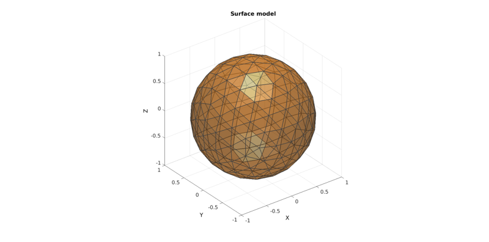

runTetGenSmesh
Below is a demonstration of the features of the runTetGenSmesh function
Contents
clear; close all; clc;
Plot settings
fig_color='w'; fig_colordef='white'; fontSize=15; faceAlpha1=0.5; faceAlpha2=1; edgeColor=0.25*ones(1,3); edgeWidth=1.5; patchColor=[1 0.5 0];
path names
filePath=mfilename('fullpath'); savePath=fullfile(fileparts(filePath),'data','temp'); modelName=fullfile(savePath,'tetgenmodel');
MESHING A SINGLE REGION MODEL
Building a geodesic dome surface model
[F,V,~]=geoSphere(2,1);
Plotting model
hf=figuremax(fig_color,fig_colordef); title('Surface model','FontSize',fontSize); xlabel('X','FontSize',fontSize); ylabel('Y','FontSize',fontSize); zlabel('Z','FontSize',fontSize); hold on; hp=patch('Faces',F,'Vertices',V); set(hp,'FaceColor',patchColor,'FaceAlpha',faceAlpha1,'lineWidth',edgeWidth,'edgeColor',edgeColor); camlight headlight; set(gca,'FontSize',fontSize); view(3); axis tight; axis equal; grid on;
DEFINE FACE BOUNDARY MARKERS
faceBoundaryMarker=ones(size(F,1),1);
Define region points
V_regions=[0 0 0];
Define hole points
V_holes=[];
Regional mesh volume parameter
[regionA]=tetVolMeanEst(F,V); %Volume for regular tets
CREATING THE SMESH STRUCTURE
stringOpt='-pq1.2AaYQV'; smeshName=[modelName,'.smesh']; smeshStruct.stringOpt=stringOpt; smeshStruct.Faces=F; smeshStruct.Nodes=V; smeshStruct.holePoints=V_holes; smeshStruct.faceBoundaryMarker=faceBoundaryMarker; %Face boundary markers smeshStruct.regionPoints=V_regions; %region points smeshStruct.regionA=regionA; smeshStruct.minRegionMarker=2; %Minimum region marker smeshStruct.smeshName=smeshName;
Mesh model using tetrahedral elements using tetGen (see: http://wias-berlin.de/software/tetgen/)
[meshOutput]=runTetGenSmesh(smeshStruct); %Run tetGen
Warning: runTetGenSmesh has been renamed to runTetGen. runTetGenSmesh will be removed in future releases. %%%%%%%%%%%%%%%%%%%%%%%%%%%%%%%%%%%%%%%%%%%%% --- TETGEN Tetrahedral meshing --- 13-Mar-2017 16:36:57 Warning: smeshStruct.smeshName input will be replaced by smeshStruct.modelName in future releases! %%%%%%%%%%%%%%%%%%%%%%%%%%%%%%%%%%%%%%%%%%%%% --- Writing SMESH file --- 13-Mar-2017 16:36:57 Warning: smeshStruct.smeshName input will be replaced by smeshStruct.modelName in future releases! ----> Adding node field ----> Adding facet field ----> Adding holes specification ----> Adding region specification --- Done --- 13-Mar-2017 16:36:57 --- Running TetGen to mesh input boundary--- 13-Mar-2017 16:36:57 Opening /mnt/data/MATLAB/GIT/GIBBON/lib_ext/tetGen/tempFiles/tetgenmodel.smesh. Initializing memorypools. tetrahedron per block: 8188. Size of a point: 128 bytes. Size of a tetrahedron: 112 (112) bytes. Size of a shellface: 192 (192) bytes. Initializing robust predicates. sizeof(double) = 8 machine epsilon = 2.22045e-16 [IEEE 754 64-bit macheps] Permuting vertices. Sorting vertices. Incrementally inserting vertices. 320 (480) subfaces (segments). Recovering segments. 480 (0) segments are recovered (missing). Recovering facets. 320 (0) subfaces are recovered (missing). Found 1 domain. Initial obj = 97.129072319492394 Min radiu-edge ratio = 1.2. Min dihedral angle = 0. Splitting bad quality tets. Added 253 (0,0,253) Steiner points. Optimization level = 2. Optimization scheme = 7. Number of iteration = 3. Min_Max dihed angle = 165. Removed 18 edges. --- Done --- 13-Mar-2017 16:36:57 %%%%%%%%%%%%%%%%%%%%%%%%%%%%%%%%%%%%%%%%%%%%% --- Importing TetGen files --- 13-Mar-2017 16:36:57 --- Done --- 13-Mar-2017 16:36:57
Error using copyfile
cp: cannot create regular file '/mnt/data/MATLAB/GIT/GIBBON/doc/data/temp/tetgenmodel.1.ele': No such file or directory
Error in runTetGen (line 389)
copyfile(fileNameTemp,fileName);
Error in runTetGenSmesh (line 4)
[meshOutput]=runTetGen(inputStruct); %Run tetGen
Error in HELP_runTetGenSmesh (line 78)
[meshOutput]=runTetGenSmesh(smeshStruct); %Run tetGen
Access model element and patch data
F=meshOutput.faces; V=meshOutput.nodes; C=meshOutput.faceMaterialID; E=meshOutput.elements;
PLOTTING MODEL
%Selecting half of the model to see interior Y=V(:,2); YE=mean(Y(E),2); L=YE>mean(Y); [Fs,Cs]=element2patch(E(L,:),C(L)); hf1=figuremax(fig_color,fig_colordef); subplot(1,2,1); title('Solid tetrahedral mesh model','FontSize',fontSize); xlabel('X','FontSize',fontSize); ylabel('Y','FontSize',fontSize); zlabel('Z','FontSize',fontSize); hold on; hps=patch('Faces',F,'Vertices',V,'FaceColor','flat','CData',C,'lineWidth',edgeWidth,'edgeColor',edgeColor); view(3); axis tight; axis equal; grid on; colormap(autumn); camlight headlight; set(gca,'FontSize',fontSize); subplot(1,2,2); title('Cut view of Solid tetrahedral mesh model','FontSize',fontSize); xlabel('X','FontSize',fontSize); ylabel('Y','FontSize',fontSize); zlabel('Z','FontSize',fontSize); hold on; hps=patch('Faces',Fs,'Vertices',V,'FaceColor','flat','CData',Cs,'lineWidth',edgeWidth,'edgeColor',edgeColor); view(3); axis tight; axis equal; grid on; colormap(autumn); camlight headlight; set(gca,'FontSize',fontSize); drawnow;
VIEWING THE MODEL IN TETVIEW
TetView is an external (non-MATLAB) program for viewing TetGen meshes. The runTetGenSmesh function also copies the mesh output files to the tetView directory. TetView is usually found here: ...\gibbon\trunk\lib_ext\tetGen You can run TetView seperately or use the following to view the model in TetView:
runTetView(meshOutput.loadNameStruct.loadName_ele);
Here is an example screeshot for viewing models in tetView:

MESHING A MULTI-REGION MODEL
Simulating a multiregion mesh
[F1,V1]=parasaurolophus; %A dino [F2,V2,~]=geoSphere(2,0.4); %An internal region V2(:,1)=2*V2(:,1); V_centre=[0.75 0 0.25]; V2=V2+V_centre(ones(size(V2,1),1),:); %Joining surface sets F=[F1;F2+size(V1,1)]; V=[V1;V2]; C=[ones(size(F1,1),1);2*ones(size(F2,1),1)]; %Surface marker colors
Plotting model
hf=figuremax(fig_color,fig_colordef); title('Multi-region surface model','FontSize',fontSize); xlabel('X','FontSize',fontSize); ylabel('Y','FontSize',fontSize); zlabel('Z','FontSize',fontSize); hold on; hp=patch('Faces',F,'Vertices',V); set(hp,'FaceColor','flat','CData',C,'FaceAlpha',faceAlpha1,'lineWidth',edgeWidth,'edgeColor',edgeColor); camlight headlight; colormap autumn; set(gca,'FontSize',fontSize); view(3); axis tight; axis equal; grid on;
DEFINE FACE BOUNDARY MARKERS
faceBoundaryMarker=C;
Define region points
V_regions=[0.5 0 0;V_centre];
Define hole points
V_holes=[];
Regional mesh parameters
[A]=tetVolMeanEst(F,V); regionA=[A A*3];
CREATING THE SMESH STRUCTURE
stringOpt='-pq1.2AaYQ'; smeshName=[modelName,'.smesh']; smeshStruct.stringOpt=stringOpt; smeshStruct.Faces=F; smeshStruct.Nodes=V; smeshStruct.holePoints=V_holes; smeshStruct.faceBoundaryMarker=faceBoundaryMarker; %Face boundary markers smeshStruct.regionPoints=V_regions; %region points smeshStruct.regionA=regionA; smeshStruct.minRegionMarker=2; %Minimum region marker smeshStruct.smeshName=smeshName;
Mesh model using tetrahedral elements using tetGen (see: http://wias-berlin.de/software/tetgen/)
[meshOutput]=runTetGenSmesh(smeshStruct); %Run tetGen
Access model element and patch data
F=meshOutput.faces; V=meshOutput.nodes; C=meshOutput.faceMaterialID; E=meshOutput.elements;
PLOTTING MODEL
%Selecting half of the model to see interior Y=V(:,2); YE=mean(Y(E),2); L=YE>mean(Y); [Fs,Cs]=element2patch(E(L,:),C(L)); hf1=figuremax(fig_color,fig_colordef); subplot(1,2,1); title('Solid tetrahedral mesh model','FontSize',fontSize); xlabel('X','FontSize',fontSize); ylabel('Y','FontSize',fontSize); zlabel('Z','FontSize',fontSize); hold on; hps=patch('Faces',F,'Vertices',V,'FaceColor','flat','CData',C,'lineWidth',edgeWidth,'edgeColor',edgeColor); view(3); axis tight; axis equal; grid on; colormap(autumn); camlight headlight; set(gca,'FontSize',fontSize); subplot(1,2,2); title('Cut view of Solid tetrahedral mesh model','FontSize',fontSize); xlabel('X','FontSize',fontSize); ylabel('Y','FontSize',fontSize); zlabel('Z','FontSize',fontSize); hold on; hps=patch('Faces',Fs,'Vertices',V,'FaceColor','flat','CData',Cs,'lineWidth',edgeWidth,'edgeColor',edgeColor); view(3); axis tight; axis equal; grid on; colormap(autumn); camlight headlight; set(gca,'FontSize',fontSize); drawnow;
MESHING A MULTI-REGION MODEL CONTAINING HOLES
Simulating a multiregion mesh
%A dino [F1,V1]=parasaurolophus; %An internal region [F2,V2,~]=geoSphere(2,0.5); V2(:,1)=2*V2(:,1); %An internal hole [F3,V3,~]=geoSphere(3,0.35); %Centering internal structures V_centre=[0.75 0 0.25]; V2=V2+V_centre(ones(size(V2,1),1),:); V3=V3+V_centre(ones(size(V3,1),1),:); %Joining surface sets F=[F1;F2+size(V1,1);F3+size(V1,1)+size(V2,1)]; V=[V1;V2;V3]; C=[ones(size(F1,1),1);2*ones(size(F2,1),1);3*ones(size(F3,1),1)]; %Surface marker colors
Plotting model
hf=figuremax(fig_color,fig_colordef); title('Multi-region surface model','FontSize',fontSize); xlabel('X','FontSize',fontSize); ylabel('Y','FontSize',fontSize); zlabel('Z','FontSize',fontSize); hold on; hp=patch('Faces',F,'Vertices',V); set(hp,'FaceColor','flat','CData',C,'FaceAlpha',faceAlpha1,'lineWidth',edgeWidth,'edgeColor',edgeColor); camlight headlight; colormap autumn; set(gca,'FontSize',fontSize); view(3); axis tight; axis equal; grid on;
DEFINE FACE BOUNDARY MARKERS
faceBoundaryMarker=C;
Define region points
V_regions=[0.5 0 0; 0 0 0];
Define hole points
V_holes=[V_centre];
Regional mesh parameters
[A]=tetVolMeanEst(F,V); regionA=[A A/2];
CREATING THE SMESH STRUCTURE, meshing without the surface constraints imposed by the -Y this time.
stringOpt='-pq1.3AaQ'; smeshName=[modelName,'.smesh']; smeshStruct.stringOpt=stringOpt; smeshStruct.Faces=F; smeshStruct.Nodes=V; smeshStruct.holePoints=V_holes; smeshStruct.faceBoundaryMarker=faceBoundaryMarker; %Face boundary markers smeshStruct.regionPoints=V_regions; %region points smeshStruct.regionA=regionA; smeshStruct.minRegionMarker=2; %Minimum region marker smeshStruct.smeshName=smeshName;
Mesh model using tetrahedral elements using tetGen (see: http://wias-berlin.de/software/tetgen/)
[meshOutput]=runTetGenSmesh(smeshStruct); %Run tetGen
Access model element and patch data
F=meshOutput.faces; V=meshOutput.nodes; C=meshOutput.faceMaterialID; E=meshOutput.elements;
PLOTTING MODEL
%Selecting half of the model to see interior Y=V(:,2); YE=mean(Y(E),2); L=YE>mean(Y); [Fs,Cs]=element2patch(E(L,:),C(L)); hf1=figuremax(fig_color,fig_colordef); subplot(1,2,1); title('Solid tetrahedral mesh model','FontSize',fontSize); xlabel('X','FontSize',fontSize); ylabel('Y','FontSize',fontSize); zlabel('Z','FontSize',fontSize); hold on; hps=patch('Faces',F,'Vertices',V,'FaceColor','flat','CData',C,'lineWidth',edgeWidth,'edgeColor',edgeColor); view(3); axis tight; axis equal; grid on; colormap(autumn); camlight headlight; set(gca,'FontSize',fontSize); subplot(1,2,2); title('Cut view of Solid tetrahedral mesh model','FontSize',fontSize); xlabel('X','FontSize',fontSize); ylabel('Y','FontSize',fontSize); zlabel('Z','FontSize',fontSize); hold on; hps=patch('Faces',Fs,'Vertices',V,'FaceColor','flat','CData',Cs,'lineWidth',edgeWidth,'edgeColor',edgeColor); view(3); axis tight; axis equal; grid on; colormap(autumn); camlight headlight; set(gca,'FontSize',fontSize); drawnow;
Meshing from a quadrilateral input surface
Build a quadrilateral surface
boxDim=[4 5 6]; boxEl=[4 5 6]; [Fq,Vq,faceBoundaryMarker_q]=quadBox(boxDim,boxEl);
Create smesh structure
[regionA]=tetVolMeanEst(Fq,Vq); %Volume for regular tets stringOpt='-pq1.2AaYQV'; smeshName=[modelName,'.smesh']; smeshStruct.stringOpt=stringOpt; smeshStruct.Faces=Fq; smeshStruct.Nodes=Vq; smeshStruct.holePoints=[]; smeshStruct.faceBoundaryMarker=faceBoundaryMarker_q; %Face boundary markers smeshStruct.regionPoints=[0 0 0]; %region points smeshStruct.regionA=regionA; smeshStruct.minRegionMarker=2; %Minimum region marker smeshStruct.smeshName=smeshName;
Mesh model using tetrahedral elements using tetGen (see: http://wias-berlin.de/software/tetgen/)
[meshOutput]=runTetGenSmesh(smeshStruct); %Run tetGen
Access model element and patch data
F=meshOutput.faces; V=meshOutput.nodes; C=meshOutput.faceMaterialID; E=meshOutput.elements;
PLOTTING MODEL
%Selecting half of the model to see interior Y=V(:,2); YE=mean(Y(E),2); L=YE>mean(Y); [Fs,Cs]=element2patch(E(L,:),C(L)); hf1=figuremax(fig_color,fig_colordef); subplot(1,3,1); title('The quadrilateral surface model','FontSize',fontSize); patch('Faces',Fq,'Vertices',Vq,'FaceColor','flat','CData',faceBoundaryMarker_q,'FaceAlpha',faceAlpha1,'lineWidth',edgeWidth,'edgeColor',edgeColor); colormap(jet(6)); colorbar; set(gca,'FontSize',fontSize); view(3); axis tight; axis equal; grid on; subplot(1,3,2); title('Solid tetrahedral mesh model','FontSize',fontSize); xlabel('X','FontSize',fontSize); ylabel('Y','FontSize',fontSize); zlabel('Z','FontSize',fontSize); hold on; hps=patch('Faces',F,'Vertices',V,'FaceColor','flat','CData',C,'lineWidth',edgeWidth,'edgeColor',edgeColor); view(3); axis tight; axis equal; grid on; colormap(autumn); camlight headlight; set(gca,'FontSize',fontSize); subplot(1,3,3); title('Cut view of Solid tetrahedral mesh model','FontSize',fontSize); xlabel('X','FontSize',fontSize); ylabel('Y','FontSize',fontSize); zlabel('Z','FontSize',fontSize); hold on; hps=patch('Faces',Fs,'Vertices',V,'FaceColor','flat','CData',Cs,'lineWidth',edgeWidth,'edgeColor',edgeColor); view(3); axis tight; axis equal; grid on; colormap(autumn); camlight headlight; set(gca,'FontSize',fontSize); drawnow;

GIBBON www.gibboncode.org
Kevin Mattheus Moerman, gibbon.toolbox@gmail.com